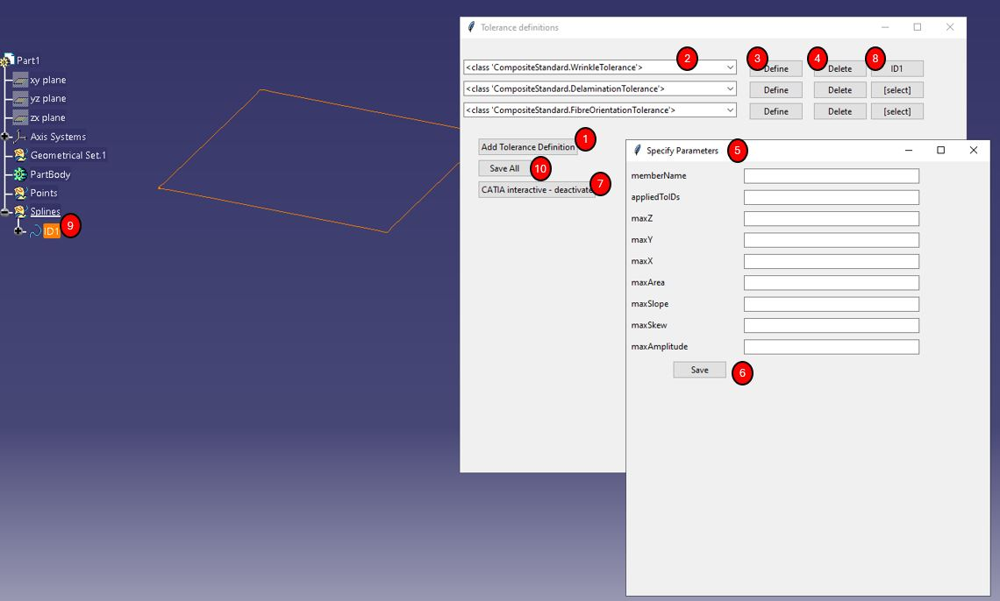

Apply_Tolerances¶
Similarly to larger layup tool, a tolerance definition tool was created. This will likely also be part of many commerical offerings, and most users will probably look to export this information from there. However, for demonstration use cases open-source option was created.
The basic UI created is shown in figure below.
{kind=link}
User can create a tolerance object by adding a line (using “1”), and selecting type of tolernace (“2”). The drop-down options for (“2”) are collected from ‘CompositeStandard’; the object collection is checked for any objects that have ‘CompositeStandard.Tolerance’ as it’s parent.
The “define” button (“3”) opens an extra tab (“5”), where user can define all relevant tolerance parameters. Again, the options are automatically picked based on selected ‘CompositeStandard.Tolerance’ object. To edit these variable the pop-up needs to be closed using the “save” button (“6”).
The “delete” button (“4”) simply removes a line from current tolerance list, including any details saved into the object so far.
The “CATIA interactive” button (“7”) allows for CATIA interactive object selection. This can be used to define delimitation of area that a tolerance applies to. The button loads current JSON file geometries, and creates buttton for each tolerance - this button (“8”) allows for selection of geometry in CATIA window. If bespoke geometry is selected, this is turned into point cloud and appended to the tolerance object. If automatically loaded geometry with assigned “ID” is selected, existent object from JSON is simply linked to the tolerance at hand. The objects in CATIA have to be selected from the tree (“9”), for now. Selecting the geometry by clicking on the 3D representation tends to save CATIA’s internal reference, which is not suitable.
The “Save All” button (“10”) simply stores all information provided into a new version of JSON CompoST file.
Current_state¶
Currently no option exists for selecting file through the UI, user needs to edit this in the script.